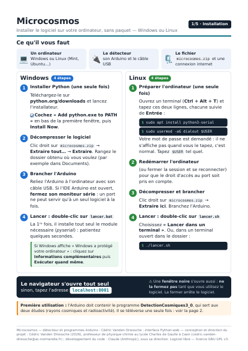
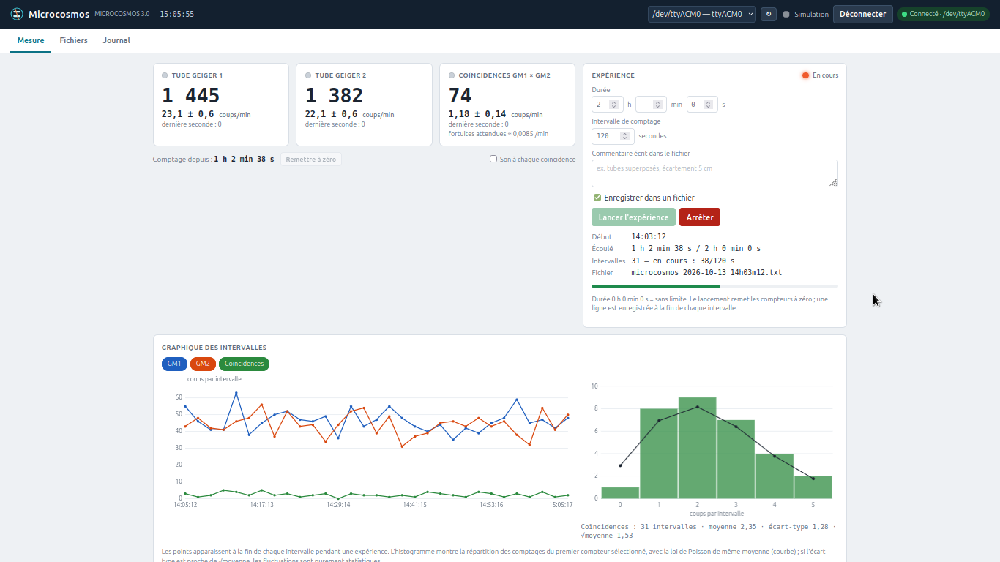
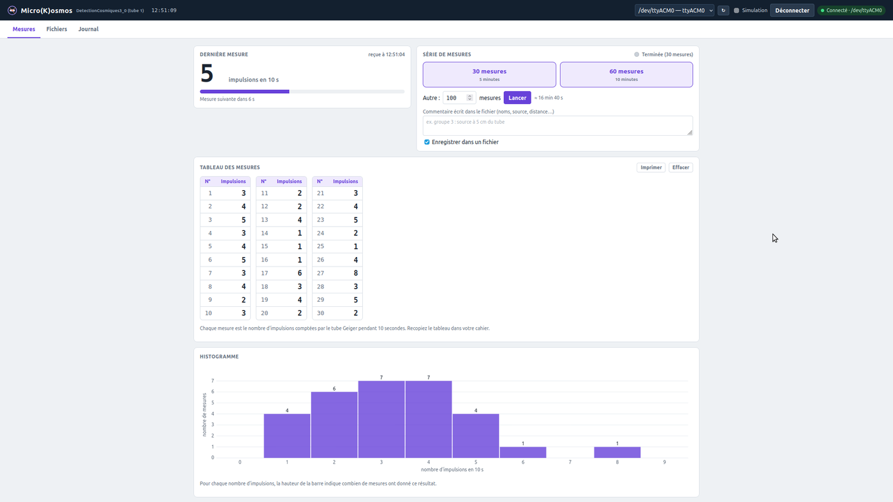

Un logiciel, deux études
Microcosmos est une interface qui s’ouvre dans le navigateur pour piloter le détecteur (1 ou 2 tubes Geiger reliés à un Arduino Uno). Deux onglets, deux études :
- Rayons cosmiques : comptages des deux tubes et de leurs coïncidences, expériences de durée réglable, graphique par intervalle et histogramme comparé à la loi de Poisson ;
- Radioactivité : séries de 30, 60 ou N mesures de 10 s sur un tube, tableau à recopier dans le cahier et histogramme.
Il fonctionne sous Linux, Windows et macOS, enregistre les mesures dans des fichiers texte lisibles par LibreOffice Calc ou Excel, et propose un mode simulation pour essayer sans détecteur.

Télécharger

Microcosmos — logiciel, programmes Arduino et notice
L’archive contient le logiciel (Python), l’interface web, les deux programmes Arduino, les scripts de lancement et la notice illustrée. Logiciel libre sous licence GNU GPL v3.
Installation en trois étapes
1 · Programmer l’Arduino
Ouvrir arduino/DetectionCosmiques3_0/DetectionCosmiques3_0.ino avec l’IDE Arduino, choisir la carte
« Arduino Uno » et le bon port, puis Téléverser. Ce programme sert aux deux études ; il n’y a à le faire qu’une fois.
2 · Lancer le logiciel
Windows : installer Python depuis python.org en cochant « Add python.exe to PATH », puis double-cliquer sur lancer.bat.
Linux (paquet .deb) : double-cliquer sur microcosmos_1.2.0_all.deb, puis « Installer le paquet ». Microcosmos apparaît dans le menu (Éducation ou Sciences).
Linux (archive) : sudo apt install python3-serial et sudo usermod -aG dialout $USER (une fois, puis redémarrer), puis double-clic sur lancer.sh.
3 · Mesurer
Le navigateur s’ouvre sur http://localhost:8001. Choisir le port de l’Arduino puis Connecter.
Laisser la fenêtre noire ouverte pendant l’utilisation. Cocher « Simulation » pour essayer sans détecteur.
Ce qu’envoie l’Arduino. Chaque seconde, une ligne D;seconde;impulsions GM1;impulsions GM2;coïncidences
(tube 1 sur l’entrée 2, tube 2 sur l’entrée 3). Une coïncidence est comptée quand les deux tubes réagissent dans la même fenêtre de 1 ms
(voir le principe). Pour la radioactivité, le logiciel additionne les impulsions du tube choisi par tranches de 10 s mesurées par l’Arduino.
Le paquet .deb pour Linux. Il installe aussi le module du port série (python3-serial),
ajoute « Microcosmos » au menu et donne directement accès aux ports USB : pas de commande usermod ni de redémarrage.
Si le détecteur était branché pendant l’installation, le débrancher puis le rebrancher. Les mesures sont rangées dans Documents/Microcosmos.
Il remplace la version 1.1.0 si elle est installée. Pour désinstaller : sudo apt remove microcosmos (les mesures sont conservées).
Tout est détaillé dans la notice Linux.
Options de lancement : --reseau (accès depuis les autres appareils du réseau), --dossier CHEMIN, --port-web 8001.
Le logiciel du cosmodétecteur utilisant le port 8000, les deux peuvent fonctionner en même temps.
Les deux onglets


Rayons cosmiques
- Trois cartes : le total de chaque compteur depuis la remise à zéro et le taux en coups/min avec son incertitude (± √N / t). La carte des coïncidences donne aussi le nombre de coïncidences fortuites attendues (R₁ × R₂ × 1 ms).
- Expérience : durée (0 = sans limite), intervalle de comptage et commentaire. Une ligne est écrite à la fin de chaque intervalle dans
microcosmos_AAAA-MM-JJ_….txt. - Graphique : évolution des comptages par intervalle et histogramme comparé à la loi de Poisson de même moyenne.


Radioactivité
- 30 mesures (5 min), 60 mesures (10 min) ou un autre nombre ; chaque mesure dure exactement 10 s.
- Tableau des mesures en colonnes de 10, facile à recopier ; Imprimer n’imprime que le tableau.
- Histogramme : la moyenne et l’écart-type ne sont pas affichés, pour que les élèves les calculent eux-mêmes.
Ils figurent dans le fichier
radioactivite_….txt, pour le professeur.
Onglet Fichiers : téléchargement des mesures (texte avec tabulations, pour LibreOffice Calc ou Excel) et des deux programmes Arduino depuis l’interface.
Contenu de l’archive
| Fichier | Rôle |
|---|---|
microcosmos.py | programme principal (serveur de l’interface web) |
station.py | lecture des données, expériences, séries, fichiers |
detecteur.py | liaison série avec l’Arduino et détecteur simulé |
web/index.html | interface |
arduino/DetectionCosmiques3_0/ | programme Arduino recommandé (deux études) |
arduino/MicroCosmosRadioactivite/ | programme à un seul tube (onglet Radioactivité) |
lancer.sh · lancer.bat | lancement par double-clic |
Notice_Microcosmos*.pdf | notices illustrées |
LICENSE | licence GNU GPL version 3 |
Auteurs et licence
Détecteur et programmes Arduino : Cédric Vanden Driessche. Interface Python-web : conception et direction du projet Cédric Vanden Driessche (2026), professeur de physique-chimie au lycée Charles de Gaulle à Caen ; développement du code : Claude (Anthropic), sous sa direction.
Ce programme est un logiciel libre : vous pouvez le redistribuer et le modifier selon les termes de la licence publique générale GNU (GPL), version 3 ou toute version ultérieure. Il est distribué sans aucune garantie.